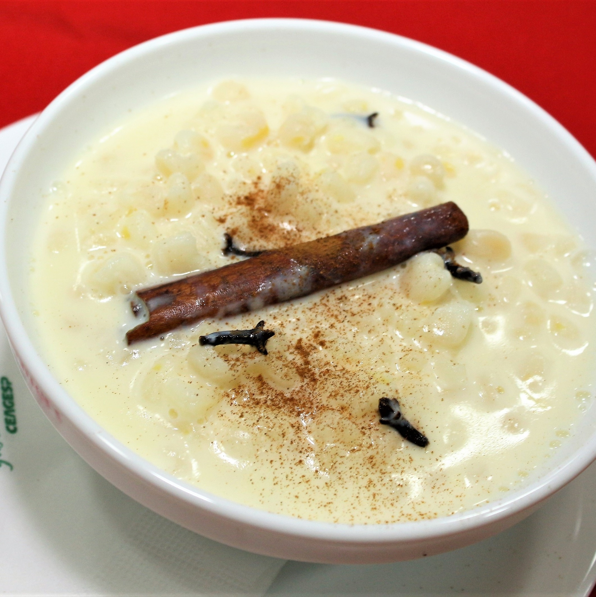

Ingredients
- 1 pound dried hominy
- 8 cups water
- 2 (14 ounce) cans coconut milk
- 1 (14 ounce) can sweetened condensed milk
- 2 cups milk
- 2 tablespoons white sugar, or to taste
- 3 (2 inch) sticks cinnamon sticks
- ½ teaspoon ground cinnamon, plus more for garnish
- 8 whole cloves
- 1 ¾ cups freshly grated coconut
Canjica is a Brazilian pudding-like dessert that is typically served during Brazilian winter festivals, which are in June. You can use either dried hominy or the original product "Canjica de milho" in Latin or South American grocery stores.
- Cook: 1 h 20 mins
- Total: 8 h
- Prep: 9h 25 mins
- Servings: 10
- Yield: 10 servings
Nutrition Facts
Per Serving: 528 calories; protein 10.4g; carbohydrates 66.3g; fat 25.8g; cholesterol 17.2mg; sodium 88.6mg.
Directions
- Combine hominy and water in a large saucepan and soak 8 hours to overnight.
- The next day, bring soaked hominy and liquid to a boil over high heat. Reduce heat and simmer until hominy is soft, about 1 hour. Add coconut milk, condensed milk, regular milk, 2 tablespoons sugar, cinnamon sticks, 1/2 teaspoon ground cinnamon, and cloves. Cook over low heat until mixture has thickened, about 15 minutes.
- Taste and sweeten with more sugar if needed. Stir in coconut. Ladle into serving bowls and sprinkle with cinnamon.